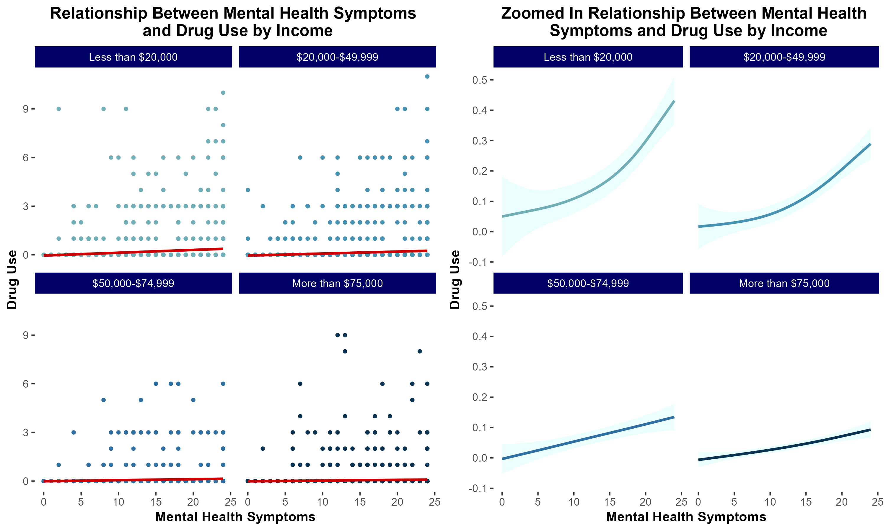

# objective: convert variables to factor variables
# variables to convert:
# AGENG_C - Age groups in 9 levels
# FIREARM_C - Firearm type
# WHO_C - Relationship between injurer and injured
# SEX - Sex of injured person
# RACE_C - Race of injured person
# CLASS_C - Incident classification
# ONTHEJOB - Injured on the job
#variable to create:
# AGENG2_C_FACTOR - Age group in 4 levels
#variables to keep as-is:
# YEAR - Year
# load dependencies ------------------------------------------------------
library(tidyverse)
library(readxl)
# load data ---------------------------------------------------------------
df <- read_excel("data/Firearm-Injuries-2004-2014-Data.xlsx")
head(df)
# AGENG_C - Age groups in 9 levels ---------------------------------------
df$AGENG_C_FACTOR <- factor(df$AGENG_C)
class(df$AGENG_C_FACTOR)
# [1] "factor"
unique(df$AGENG_C_FACTOR)
# [1] 4 5 2 8 6 0 3 7 1 9
# Levels: 0 1 2 3 4 5 6 7 8 9
# When making the graphs using this variable, make sure to adjust labels for readability
# Creating smaller age bins -----------------------------------------------
# the existing categories for age bins is too granular so let's make new factor variable for age
# intended levels:
# NA: Unknown
# bin 1: 0-14
# bin 2: 15-34
# bin 3: 35-54
# bin 4: 55+
df <- df |>
mutate(AGENG2_C_FACTOR = factor(
case_when(
AGENYR_C >=0 & AGENYR_C <=14 ~ "0-14",
AGENYR_C >=15 & AGENYR_C <=34 ~ "15-34",
AGENYR_C >=35 & AGENYR_C <=55 ~ "35-54",
AGENYR_C >=55 ~ "55+"
)
))
glimpse(df)Final Projects
Content Warning:
Adapted from group 1:
The next two projects address topics related to firearm injuries, gun violence, and suicide attempt by firearm. Some content may be distressing or triggering for some individuals. Please engage with care when reading this content and prioritize your well-being.
group 1: Exploring Non-Fatal Firearm Injuries
Table 1
Table 2
Fit Statistics
Reflections
- What students figured out how to do along the way: In our project group, we learned how to collaboratively brainstorm a project that had theoretical grounding, available data, and an opportunity to produce meaningful analysis. Through this process, we learned how to delegate tasks for different parts of the project workflow and depend on each other for parts of the project.
- What they struggled with: We struggled with project organization because of our relative unfamiliarity with GitHub. We used this opportunity to try to learn how to navigate the platform more effectively, but we also relied on other forms of organization.
- What they wouldn’t have been able to do before taking the class: Many of us are relatively new to R, so to make a whole project (albeit a quickly made one) is quite the feat. We learned how to apply our biostatistical and science communication training to effectively chalk up a project and create deliverables that tell a story about the data.
- What principles they found useful in decision-making during the project: We centered collaboration and transparency in our decision-making. We were communicative with each other about our questions and struggles, so we all were able to give feedback and iterate effectively.
great code structure!

01_data_cleaning_factor_variables.R
one comment on file structure
ideally 99_run_everything.R should just be a script that essentially sources several other scripts along the following lines:
the key idea of it being that we want users to be able to run the whole analysis just by hitting Cmd/Ctrl+Enter just a handful of times.
It also makes development easier because if you want to work on, say, the 5th script, you just hit Cmd/Ctrl+Enter to run up through the 4th script and then go into the 5th script and start doing your
one comment on regression modeling
it’s not clear to me if you have non-cases in your dataset, so is the regression model appropriate?
in your intro you say,
In this study, we used data from the NY Times GitHub repository, which focuses specifically on examining all nonfatal injuries related to firearms (i.e., injuries caused by powder-charged guns) as well as nonfatal injuries involving BB and pellet guns, as reported through NEISS from 2004 to 2014. The dataset comprises cases where individuals made initial visits to the emergency department for injury treatment.
great job!
I thought you had really clear figures, good use of color, and good project file organization.
group 2: school shooting events
introduction
We utilized the K-12 School Shooting Database from the Center for Homeland Defense and Security (CHDS) to analyze the frequency and distribution of school shootings across U.S. states from 1970 to 2020. We then look at how this frequency varies by passage of five different gun laws, ranging from minimum age for gun possession to necessity of background checks. By understanding trends and potential patterns, this work could inform effective policy and the development of risk prevention strategies. To this effect, we conduct a Difference-in-difference analysis of laws with a significant association with school shooting events to clarify the policy impacts on shooting events.

great inline references
Source: Florida Senate. (2018). Committee Substitute for Senate Bill No. 7026: Marjory Stoneman Douglas High School Public Safety Act. The Florida Senate. https://www.flsenate.gov/Session/Bill/2018/07026
Source: Everytown Research. (2025). Compare State Gun Laws. [https://everytownresearch.org/rankings/compare/]
Conclusions
This study brought interesting themes to light on the nature of school shooting events. Particulary, our descriptive analysis showed these events were typically in response to an escalation of a dispute and carried out with a handgun. Location wise, the majority of events occurred in high school and commonly oustide the school. Also, the vast majority were not pre-planned attacks.
We ran our regression analysis to find associations between school shooting events and gun laws. Of note, the only significant associations were with the presence of laws that dictated a minimum age for handgun possession and laws that allowed court-ordered gun removal for a person posing danger to themselves or others. The handgun possession law was associated with fewer school shooting events, which aligns with our descriptive analysis showing most shooting events occurred with handguns. Suprisingly, the law allowing for court-ordered gun removal was associated with increaesd shooting events. One explanation could be most shooting events were not pre-planned attacks, so being able to identify someone as a danger to themselves/others then removing their gun may not be as effective. Also, while a child may be the perpetrator of the gun violence attempt, only the adult owner of the gun may be evaluated for their gun possession ability. Another explanation could be this law was passed in states with high gun ownership to temper the occurrence of shooting events. So, by prevalence of gun ownership, there would be an increased number of shooting events.
To improve our analysis, we could explore moderating variables such as prevlance of gun ownership. Since the data set on gun violence left out many of these variables, we did not test for their prevalence in our descriptive analysis. Data on socioeconomic status and mental health (e.g., depression, anxiety disorders) could have clarified the associations we found.
Overall, handgun possession laws appear effective in reducing shooting events and should be investigated further. More data on shooting events with the variables discussed above is needed to craft effective policies. This issue is difficult to investigate, but necessary to dig further into how best to protect children from gun violence.
great job!
- I’m really impressed you incorporated state population denominators so rapidly upon hearing our feedback.
- Really nice code file organization
geofacetis super clean
group 3: The Association between Wealth and Life Expectancy in the US
introduction
For this final group research project, we want to assess the association between wealth and life expectancy using the US census track data level. We hypothesize that wealth is positively associated with life expectancy.
Wealth is one of the domains of structural racism besides the built environment, criminal justice, education, housing, income and poverty, social cohesion, and transportation (Dyer et al., 2023). A cohort study in the US found that wealth disparities and mortality are positively associated (Himmelstein et al., 2022). For instance, the authors found that Black middle-aged and older adults live shorter than their White counterparts, and much of the variation is attributed to wealth disparities.
data
We used the Structural Racism Effect Index (SREI) data for our analysis (Dyer et al., 2023).The SREI data were built from the US census track data level (N=71,917). The SREI is composed of 5 domains: (1) built environment, (2) criminal justice, (3) education, (4) employment, (5) housing, (6) income and poverty, (7) social cohesion, (8) transportation, and (9) wealth. All variables have been standardized.
Exposure
Wealth (\(Y_i\)) is our main exposure at a tract i. Wealth is a standardized measure that was built from (1) aggregate home value, (2) median real estate taxes paid, (3) median home value, (4) median gross rent, (5) median monthly mortgage, (6) owner-occupied homes census tract data (Dyer et al., 2023).
Covariates
We controlled for other potential confounders such as the income and poverty, employment, education, and, the population size.
Modeling
We ran 6 linear models:
\(Y_i = \beta_0 + bWealth_i\)
\(Y_i = \beta_0 + \beta_1Wealth_i + \beta_2 IncomeAndPoverty_i\)
\(Y_i = \beta_0 + \beta_1Wealth_i + \beta_2IncomeAndPoverty_i + \beta_3Employment_i\)
\(Y_i = \beta_0 + \beta_1Wealth_i + \beta_2IncomeAndPoverty_i + \beta_3Employment_i + \beta_4Education_i\)
\(Y_i = \beta_0+ \beta_1Wealth_i + \beta_3IncomeAndPoverty_i + \beta_3Employment_i + \beta_4Education_i +\beta_5Population_i\)
\(Y_i = \beta_0+ \beta_1Wealth_i + \beta_3IncomeAndPoverty_i + \beta_3Employment_i + \beta_4Education_i +\beta_5Population_i + \\ \hspace{.5in}\beta_6Wealth_i\times IncomeAndPoverty_i\times Education_i\times Population_i\)

Reflections
I become more confident using Github now. In the past, I was not comfortable using Github. I usually asked my collaborators to send any R scripts as an email attachment. I will start using Github now each time I start a new project.
I learned the importance of keeping code clean, efficient, and well-documented, with comments explaining each step—principles I intend to carry forward in my work. Before taking this course, my knowledge was limited to loading databases in R and running pre-written code. Now, however, I feel confident in my ability to create beautiful plots and conduct a wide range of analyses independently.
Before taking this class, I was unaware that I could create such beautiful, intuitive, and precise graphs using R. This realization has given me a sense of accomplishment, knowing that I am now capable of producing the kind of visuals seen in professional and formal publications.
Prior to this class, I had never heard of R Markdown, and whenever I encountered GitHub pages while searching for references, I would close them because I didn’t understand how GitHub worked. Through this final project, I learned how to effectively use GitHub for collaboration and how to utilize R Markdown to organize the final product … I learned that communication is the most crucial aspect when working with others on GitHub to avoid any troubles.
More than anything, this class has significantly boosted my confidence and comfort in working with R … During this final group project, I recoded data, created tables, and confidently utilized GitHub and R Markdown …
I struggle to understand the full scope of the dplyr package in R for data manipulation; however, I recognize that data cleaning and manipulation are skills that improve with practice.
great job!
- really exceptional reflections
- great data visualizations
- overcame great challenges with mapping
group 4: PFAS and Cancer
introduction
Per- and polyfluoroalkyl substances have grown increasingly ubiquitious in the natural environment and human body, with biological half-lives ranging from 2-34 years (among thousands of different PFAS analytes).
PFAS (perfluorooctane sulfonate) and PFOA (perfluorooctanoic acid), were among the most prevalent PFAS compounds detected in human serum (which remains the case for some populations). These two “legacy” PFAS have been largely restricted and removed from products, resulting in reduced exposure in recent years (although these analytes remaim in the environment due to bioaccumulation).
We were curious whether associations were still notable between these legacy PFAS compounds and cancer
Reflections
During visualisation, my primary challenge was in generating forest plots using R, particularly with the sjplot package. What was particularly difficult was incorporating additional details to customise the plot. What helped solve these problems was learning how to work with ChatGPT effectively!
The key principle I learned is, ‘Don’t clean when you’re hungry or tired.’ I spent hours trying to make adjustments in the code to show all the margins, but in the end, with some sleep and morning sunlight, it clicked in my mind, and the issue was solved.
While we decided to approach NA values through complete case analysis based on our project needs, a clean removal proved problematic as it inadvertently removed valuable data points. What proved most helpful was thoroughly examining datasets both pre- and post-merge to understand their structure and relationships. Through this process, I learned what it means to practically think about data quality assessment and the downstream implications of data cleaning decisions on analytical outcomes. I also learned a tonne about what it meant to work with a team on a common code base, and the value of communicating proactively! You don’t want to commit errors and overlaps.
After cleaning and transforming the data, I found extracting the coefficients from the models to be fairly stratightforward, but the formating of the odds ratio table to be more nuanced. More specifically, when trying to combine estimates from unadjusted and adjusted models it was difficult combining them side by side and also adding certain technical details (e.g., bolding text and increasing space between columns).
Having multiple people working with the same data was understandably inconvenient at times.
great job!
- I love that you took what we’ve touched on just briefly (PFAS and other PFO/As) and ran with it.
- The ROC figure provides a compelling alternative to other fit statistics
- Again, great reflections
group 5: cancer data from CDC WONDER
introduction
By leveraging statistical and visualization techniques, we aim to facilitate a deeper understanding of cancer patterns across different population subgroups.
Through this study, we seek to answer questions as below:
Which demographic groups exhibit the highest cancer count for specific types of cancers?
What trends and patterns emerge when incidence data is stratified by race, ethnicity, age, or sex?

nice code structure
some very nice theme-ing
in a way, our course in a snapshot
great job!
- really impressed by your visualizations
- your poisson regression table is very clear
- I am super happy to see groups using markdown and
README.mddocuments
group 6: Covid-19 Vaccine Adverse Reactions in Massachusetts From 2021-2024: A VAERS Analysis
introduction
What are the characteristics of adverse events reported of COVID-19 vaccine in Massachusetts from 2021-2024, including frequency of events by year, sex, and vaccine type?

{kind=link}
{kind=link}
{kind=link}
{kind=link}
{kind=link}
{kind=link}
{kind=link}
{kind=link}
{kind=link}
{kind=link}
{kind=link}
{kind=link}
{kind=link}
{kind=link}
{kind=link}
{kind=link}
{kind=link}
{kind=link}
{kind=link}
{kind=link}
{kind=link}
{kind=link}
{kind=link}
{kind=link}
{kind=link}
{kind=link}
{kind=link}
{kind=link}
{kind=link}
{kind=link}
{kind=link}
{kind=link}
{kind=link}
{kind=link}
{kind=link}
{kind=link}
{kind=link}
{kind=link}
{kind=link}
Conclusions
Our result is consistent with an effect described in the literature, known as the Weber Effect, whereby adverse vaccine events peak in the first year after vaccine roll out (Hoffman et al, 2014). There may also be bias introduced if those who had adverse reactions were less likeley to get re-vaccinated in 2022-2024, meaning that the remaining population in those years consists of individuals who did not have a negative reaction.
{kind=link}
Reflections
In a poll of our group members, we found that 100% of our team were either a first time user (n=4) of R or had previous exposure at beginner level (n=3). Thus, the major challenges came from our lack of familiarity with coding in R, which meant that we put in significantly more work to do our analyses. We couldn’t have done any aspect of this project before taking the class, which means that our learning has been exponential in the past 2 weeks. When decision-making in this project, we utilized the skills of clear communication and good organization skills via a whatsapp group chat and a google document to organize our team, which allowed us to coordinate between multiple individuals. We also were able to be flexible to take peoples’ perspectives into account when developing our plan for datasets and figures.
great job!
- I think you did an excellent job to 1) find a meaningful topic, 2) analyze the data to the best of your ability, 3) write it up in a very clear markdown document, and 4) reflect on your experiences in the class.
- It is all the more impressive knowing your group was composed of all beginners, and I’m so glad to see a sample of how much you’ve learned in these two weeks.
group 7: Mental Health and Drug Usage
introduction & motivation
Previous literature demonstrates that individuals suffering from mental health distress are at increased risk of developing a substance use disorder (SUD). Additionally, low socioeconomic status has been correlated with increased risk of developing SUD.
We sought to characterize the extent to which socioeconomic status modulates risk of developing SUD in a cohort of individuals self-reporting increased mental health distress.
{kind=link}
{kind=link}
df_final <- df_final %>%
mutate(agecat = factor(case_when(age==1 | age==2 | age==3 ~ 'Age 12-17',
age==4 | age==5 | age==6 ~ 'Age 18-25',
age==7 | age==8 ~ 'Age 26-35',
age==9 ~ 'Age 35-49',
age==10 ~ 'Age 50-64',
age==11 ~ 'Age 65+'),
levels=c('Age 12-17','Age 18-25','Age 26-35','Age 35-49','Age 50-64','Age 65+')))
df_final <- df_final %>%
mutate(racecat = factor(case_when(race_ethnicity==1 ~ 'NHW',
race_ethnicity==2 ~ 'NHB',
race_ethnicity==7 ~ 'Hispanic',
race_ethnicity==3 ~ 'AIAN',
race_ethnicity==4 | race_ethnicity==5 ~'NHAPI',
race_ethnicity==6 ~'More than one race'),
levels=c('NHW','NHB','Hispanic','AIAN','NHAPI','More than one race')))
df_final <- df_final %>%
mutate(urban = factor(case_when(urban_Rural==1 ~ 'Large Metro Area',
urban_Rural==2 ~ 'Small Metro Area',
urban_Rural==3 ~ 'Non-metropolitan'),
levels=c('Large Metro Area','Small Metro Area','Non-metropolitan')))
df_final <- df_final %>%
mutate(sex = factor(case_when(sex_Gender==1 ~ 'Male',
sex_Gender==2 ~ 'Female')))
df_final <- df_final %>%
mutate(educcat = factor(case_when(education==1 | education==2 | education==3 ~ 'Less than middle school',
education==4 | education==5 | education==6 | education==7 ~ 'Less than high school',
education==8 ~ 'High school or GED',
education==9 ~ 'Some college',
education==10 ~ 'Associates degree',
education==11 ~ 'College degree'),
levels=c('Less than middle school','Less than high school','High school or GED',
'Some college','Associates degree','College degree')))
df_final <- df_final %>%
mutate(inccat = factor(case_when(family_income==1 | family_income==2 ~ 'Less than $20,000',
family_income==3 | family_income==4 | family_income==5 ~ '$20,000-$49,999',
family_income==6 ~ '$50,000-$74,999',
family_income==7 ~ 'More than $75,000'),
levels=c('Less than $20,000','$20,000-$49,999','$50,000-$74,999','More than $75,000'))){kind=link}

{kind=link}
conclusions
In summary, in lower income households, mental health distress is more strongly associated with increased risk of substance use disorder.
nice file structure
{kind=link}
great job!
- Your plots are really clean!
- I think your group learned some really great lessons about how to recode variables given what the codebook says
- I especially love how you embedded important code excerpts in your markdown document.
- I feel we got to go through a great example of the debugging process figuring out that we needed to
ungroup()because the data frame had beenrowwise()d.